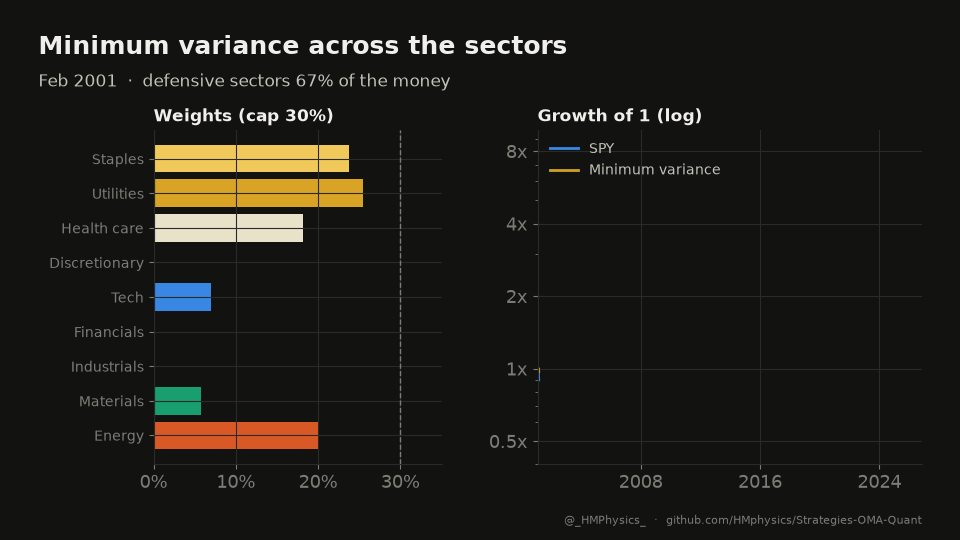
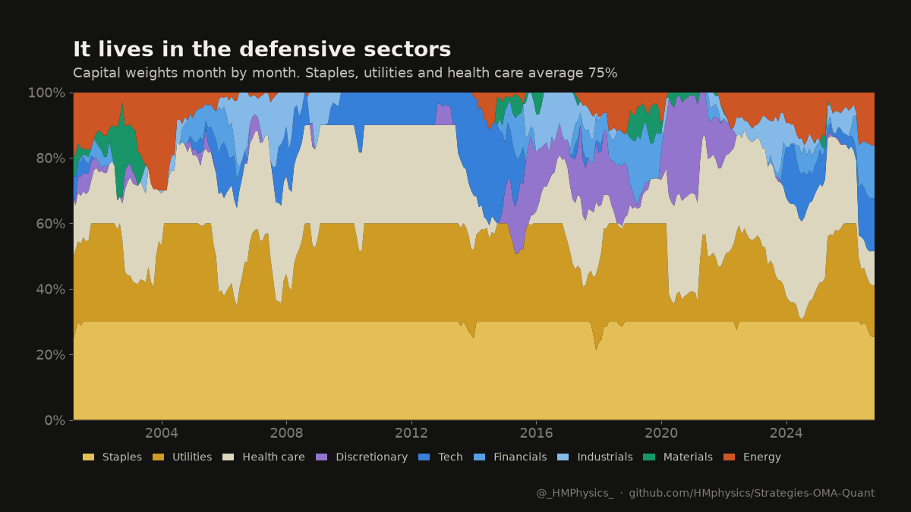
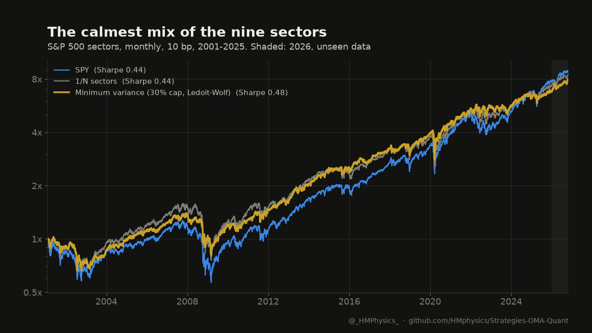
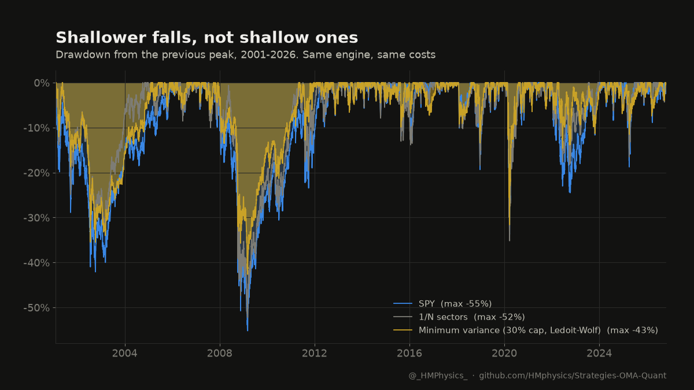
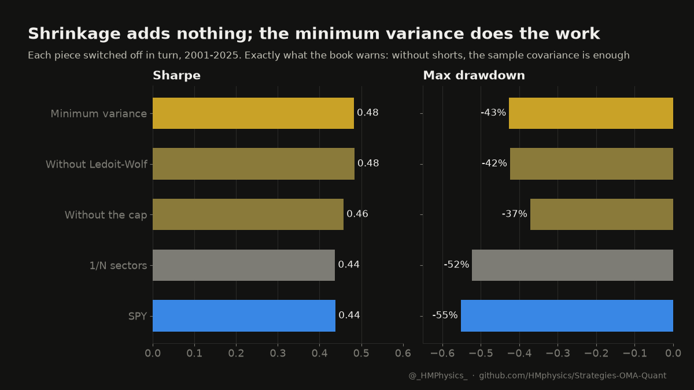
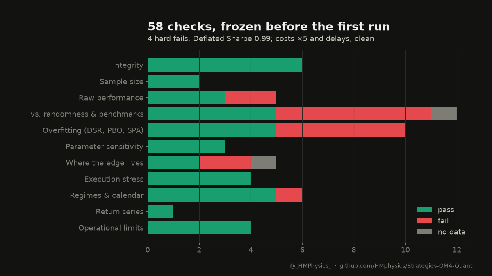

216 Quant Books · Episode 6 · Book 1 · Strategy 6 of the series
From Daniel P. Palomar's Portfolio Optimization: Theory and Application (Cambridge, 2025). Hold the calmest possible mix of the nine S&P 500 sectors and see whether the low-volatility anomaly pays.
Sample 1 February 2001 to 31 December 2025, the nine original SPDR sector ETFs, monthly, long only, 30% cap per sector, 10 bp per side. Same engine and costs for every line.
How it plays
Low-volatility stocks have historically earned about as much as risky ones with less risk: one of the best-documented anomalies in finance. The book's global minimum variance portfolio (GMVP) is the purest way to harvest it, because it needs no return forecasts at all.
Every month the strategy estimates a year of sector covariances, shrinks them towards a simpler target (Ledoit-Wolf, the book's recommended fix for noisy estimates), and solves for the long-only weights with the lowest volatility, never more than 30% in one sector.


The record

| Portfolio | Sharpe | CAGR | Vol | Max DD | 2026 Sharpe | 2026 Max DD |
|---|---|---|---|---|---|---|
| Minimum variance (30% cap, Ledoit-Wolf) | 0.48 | 8.0% | 14.8% | −42.6% | 1.84 | −7.4% |
| Without Ledoit-Wolf | 0.48 | 8.0% | 14.8% | −42.4% | 1.75 | −7.5% |
| Without the cap | 0.46 | 7.4% | 14.2% | −37.1% | 1.92 | −7.7% |
| 1/N sectors | 0.44 | 8.3% | 18.3% | −52.2% | 1.49 | −6.4% |
| SPY, buy and hold | 0.44 | 8.6% | 19.2% | −55.2% | 0.98 | −8.9% |
2001–2025 sample unless marked. 2026 runs from January to October. Sharpe is over the T-bill rate.


What the engine checked
YGGDRASIL is the audit engine behind this series. The rules and the pass thresholds were written down and sealed before a single backtest ran, and every variant we looked at counts against us.

The verdict
Minimum variance across the sectors does what the low-volatility anomaly promises: a slightly better return per unit of risk than the market, with less volatility and smaller falls, and it survives costs and delays. And the book was right twice: the fancy shrinkage adds nothing once shorts are off the table.
It doesn't clear YGGDRASIL's bar. The advantage over a plain index fund is small, it leans heavily on three defensive sectors, and −43% is not a calm portfolio. Worth knowing and worth studying, not quite worth our capital.